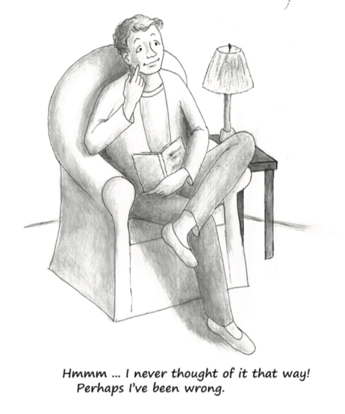

支配政治决策的观点总是缓慢进化的结果，这种进化历时很久，并且是在多重不同的水平进行的。新思想最初产生于少数人中，而后逐步传播，直至被对其起源所知甚少的大众所接受。（《自由宪章》，第七章，哈耶克）
卡尔·马克思坚持说人的观念是由他在经济中的地位和功能决定的。观念本身并不能独立地塑造或控制经济和社会。
20世纪杰出的经济学家乔治·斯蒂格勒(1911-1991)也相信观念不重要。在斯蒂格勒看来，人们总是寻求最大化物质上的享受。因此政府官员只为那些能给自己带来最多好处的个人和团体服务。按斯蒂格勒的说法，立法和公共政策从来就不是观念和理想的产物，而是狭隘的物质利益——特别是那些能进行有效政治游说的团体的利益相互作用的结果。
马克思毫无疑问属于政治上的左派。斯蒂格勒则是右派。但他们都认为观念是被决定的，而非做决定的。他们都认为像纯观念这样无形、主观、难以观察和量化的东西在社会演化中是起不了多大作用的。
马克思和斯蒂格勒并不孤单。很多学者，尤其是经济学家都对观念能独立影响公共政策的可能性不予考虑。在这些学者看来，决定经济表现和公共政策细节的唯一力量是对个人物质得失的计算。
认为观念对公共政策的形成没有显著影响的看法确实包含了重要的真相。社会不可能被任意塑造成我们梦想的样子。历史上有太多人拒绝承认这一点，而去追求乌托邦的梦想。他们在历史上留下了许多方案，想让社会摆脱自利和物质利益，让爱、普遍的同志情谊或者被假定为慈爱的强力领导者来管理社会事务。这些方案和计划都失败了。所以为了避免被这些浪漫和乌托邦计划的虚假承诺搞糊涂，我们必须永远记住无法回避的资源稀缺性和人性的现实——比如我们不可能深入了解和关心社会中成千上万的陌生人。
但对现实的这种冷静接纳并不要求我们认为观念不会产生真实的后果。人类是具有非常复杂的交流能力的社会动物。我们选择生活于群体之中，并且不断地谈话、写作。谈话和写作如果不是在分享观念，那又是什么呢？这种群体性和持续不断的观念分享意味我们不仅被人们的行为和周围物理环境的细节所影响，还被人们是怎么想的——观念所影响。
观念有力量的最有力的证据体现在极权国家身上，它们无一例外都耗费巨大的努力来控制人们接触的观念。如果观念不重要，独裁者和暴君才不会花那么多精力和财富来阻止人们自由地出版和谈话。政府也不会浪费那么多钱进行宣传鼓动。如果观念无力决定政府该做什么也无力阻止政府的行为的话，表达的自由就应该变得很普遍。
权力受宪法约束的民主政府也表现的像观念有其结果一样。每一条立法都毫无例外地被宣传为促进了公共利益，即使那些显然只是为了帮助特殊利益群体的法律规章也会被包装成提高社会整体环境的重要方法并呈现给公众。
例如考虑下农业补贴，它是由农业游说团体拥有的不成比例的政治力量驱动的。没有哪个政客会说，“我投票支持这些补贴是因为农民在政治上很有力量而为此买单的消费者和纳税人没有。”如果斯蒂格勒是对的，政府政策只是由特殊利益团体推动的，因此人们关于政策“对错”的观念与此无关，那政府就不会费劲把农业补贴和其他为特殊利益团体创造的特权包装成为了公众利益。不论过去现在，政府声明中都普遍存在着不诚实和表里不一，这证明了观念的力量。
无需怀疑，观念确有其结果。
关于政府的恰当角色的观念决定着政府会试着做些什么、克制着不做什么。而这些观念又是由关于自由市场如何运行、市场程序和结果的正义/非正义性的观念塑造的。举个例子，如果一个社会的主流观念是国际贸易是邪恶的或者对经济有害的，那它就永远不会追求自由贸易的政策。反之，如果主流观念认为限制贸易在道德上不可接受、自由的国际贸易总是在经济上有利，那社会就不会容忍高关税和其他保护主义措施。
因此获得“正确”的观念并尽力传播它是很重要的。对市场和政府的普遍错误认识会不可避免地导致损害经济的政策，而正确的认识会带来有益经济的政策。
但观念是如何产生、传播和培养的呢？今天的主流观念是如何改变或替代其他观念的呢？家庭、教会、俱乐部、大众媒体和（当然）学校，都在这过程中扮演着各自的角色。同样，还有公共知识分子——报纸杂志上的专栏作家、博主、电视电台的时事评论员、书籍写作者。公共知识分子的言论不仅仅、甚至主要不是说给其他知识分子听的。他们主要是说给大众听的。公共知识分子有着向广大听众解释严肃观念的特殊技巧，因此在把学术观念提炼成公众能理解的语言和形式的过程中，他们扮演着核心角色。这样的公共知识分子不做原创研究，也不创造新观念。他们只是汇报研究发现并把学术观念传播给大学和智库之外的大众。
因此大多数人关于市场如何运作与政府干预的希望和危险的观念来源于两个主要“生产者”：一是生产了这些观念的学者、研究人员和高校教师，一是把这些观念传播给大众的公共知识分子。如果想提高现代社会的公众对市场和政治的认识，学者和公共知识分子都必须做出贡献。
可能历史上偶有例外，但没有哪个学科在影响公众对市场和政治的观念上像经济学这么重要。约翰·梅纳德·凯恩斯在1936年敏锐地注意到“经济学家和政治哲学家的思想，无论对与错，都比我们所想象的更有力量。事实上，这个世界基本上都被它们控制。从事实际工作的人们认为他们并不受这些思想的束缚，但他们却往往是某些已经逝去经济学家的奴隶。”
今天的新研究和理论当然对当下现实几乎没有影响。专业经济学家的观念得先由公共知识分子加以提炼和传播，而这个过程需要时间。一个很好的例子就是亚当·斯密的学术观点对自由贸易的影响。当斯密于1776年第一次发表他那本关于自由贸易的伟大著作——《国民财富的性质和原因的研究》（即《国富论》）时，保护主义政策正盛行于大不列颠。这些政策是如此根深蒂固以至于斯密认为对废除贸易保护改为单方面的自由贸易政策抱有期待是荒唐可笑的。不过这事斯密错了。70年后，不列颠采纳了自由贸易的政策。
不列颠对自由贸易的接纳（始于1846年议会热切地废除了向谷物征收关税的《谷物法》）很大程度上要归功于斯密对自由贸易的学术研究。斯密在论证中所展现的逻辑和雄辩鼓舞了其他学者去对贸易做更深入的研究。这些研究极大地确证并强化了斯密的结论。同样重要的，它也鼓舞着那个时代的演说家、宣传册写作者和其他公共知识分子开始关注自由贸易问题。这些公共知识分子向公众解释自由贸易的好处和保护主义的危害。到了19世纪中期，不列颠的民意已经转向支持自由贸易和其它相关的自由市场观念。之后直到20世纪早期不列颠才再次放弃自由贸易，而这依然是学术上早些年的进展经由公共知识分子传播给大众的产物。
不列颠关于自由贸易和保护主义的经历说明如果学者的观念对了，那正确的观念最终很可能会使公共政策变好。但反之亦然，如果学者持有错误的观念，公共政策最终会反映出这些错误。
20世纪没有哪个经济学家像F.A.哈耶克那样努力去获取正确的观念。他对经济周期进行了开创性研究，又探索了价格的作用和市场竞争的本质，然后深刻分析了法治和对人类行为、限制（哪怕怀着最大善意的）政府政策起指导性作用的原则的重要性。哈耶克就这样给关于自由社会和负责任个体的研究注入了急需的新活力。哈耶克的思想不仅继续激发着经济学家和其他社会科学家的原创研究，还成为了许多公共知识分子的谈论主题。
哈耶克的思想已经带来了回报。英国前首相撒切尔夫人在谈论谁影响了她要把英国从集体主义中拖出来的想法时，就单独提到了哈耶克。在20世纪的最后25年里，哈耶克的工作在美国也关键性地启发和指导着人们更普遍地依赖自由市场。
但按哈耶克自己的理解，自由和自由市场的观念必须不断被赋予新生并一再重新发现。就像英美新近的政治动向显示的，这个任务永远不会最终完成。各种各样关于集体主义的相反观念总是在不断地产生、改进、传播。古典自由主义者和其他捍卫自由市场与严格限制政府权力的人如果不能成功的反驳这些集体主义观念，我们就会迎来集体主义的的胜利。
作为社会科学中最深刻的思想之一，哈耶克的思想会继续在自由的智力和道德问题上滋养未来的许多世代。我希望这本小书在向人们介绍哈耶克的思想并唤醒他们根据这些思想去增强自由文明的根基上能起一些作用。这样自由文明不仅能持续，还能传遍全球。